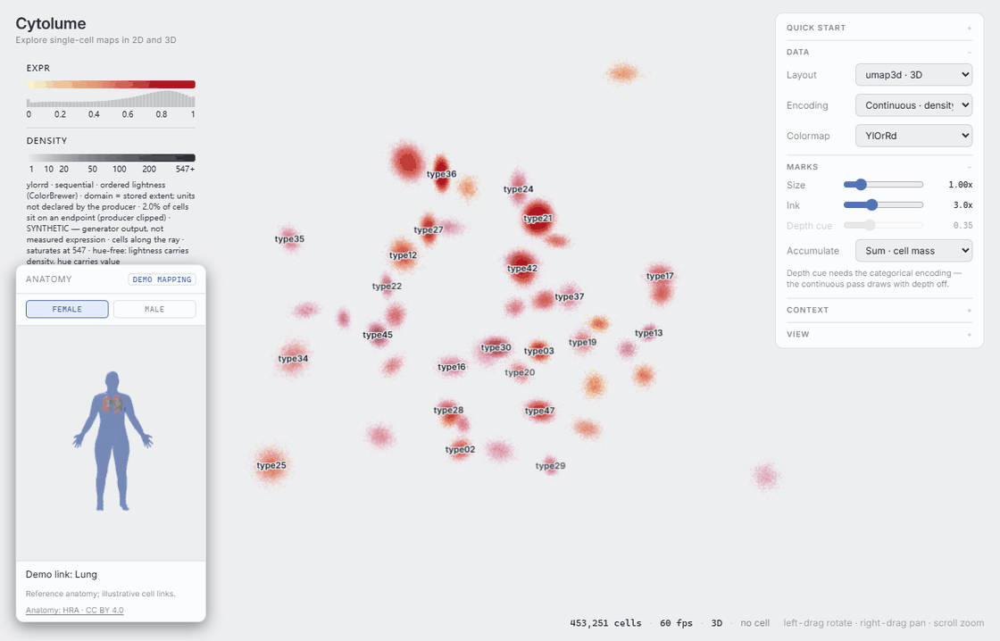
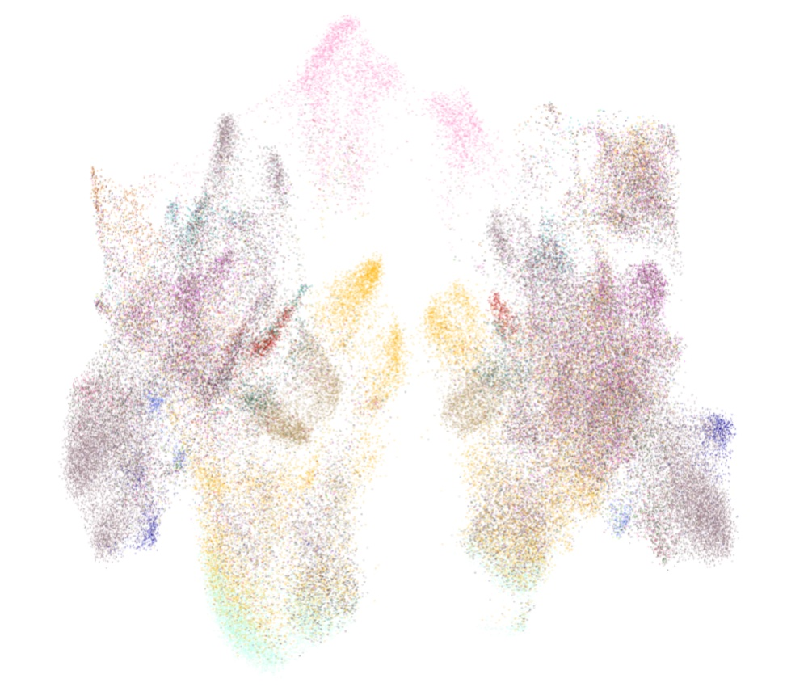

Cytolume Featured
A WebGL2 visualization library and interactive showcase for large single-cell embeddings. It draws UMAP, t-SNE, and PCA layouts in 2D and 3D on the GPU, follows the same cells through animated layout transitions, and lets you select populations with a lasso, read values and density from separate keys, view Human Reference Atlas anatomy beside the cell map, and export figures with legends and data provenance.
The live demo uses 453,251 synthetic cells in 48 example categories, generated
from fixed seeds. Research datasets enter through its Python pipeline from .h5ad files.

HRA Cell Embeddings
A visualization pipeline for single-cell transcriptomics embeddings from the Human Reference Atlas (HRA) and the HuBMAP consortium. It progresses from raw UMAP mappings through tuned PCA + t-SNE combinations over ~453k cells, isolating the top 24 cell types for clearer biological interpretation — turning massive single-cell datasets into legible maps.

HRA Cell Embeddings on GitHub →